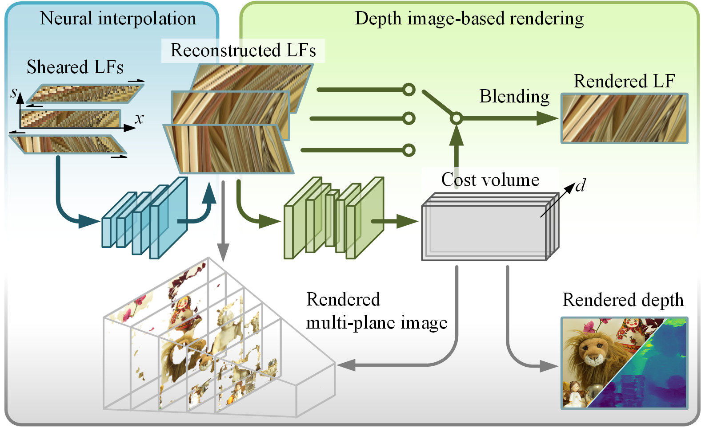
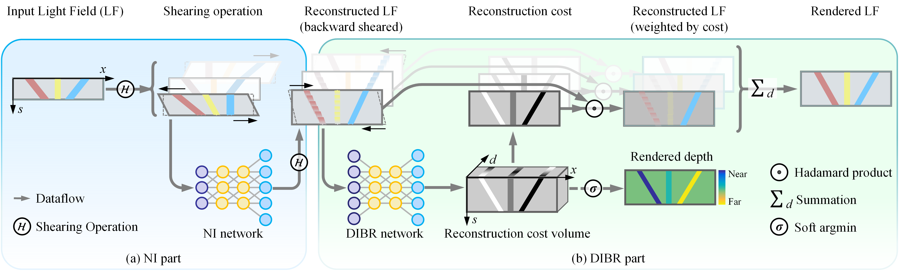
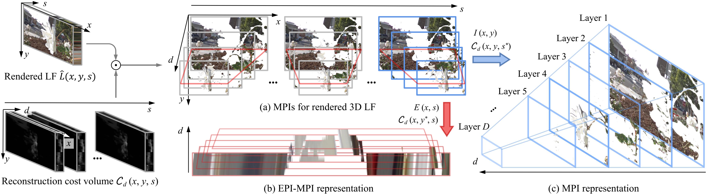

Back to my homepage
IEEE TPAMI 2025
Geo-NI: Geometry-aware Neural Interpolation for Light Field Rendering
Gaochang Wu1, Yuemei Zhou2, Lu Fang2, Yebin Liu2, Tianyou Chai1
1. Northeastern University, 2. Tsinghua University
Abstract
We present a novel Geometry-aware Neural Interpolation (Geo-NI) framework for light field rendering. Previous learning-based approaches either perform direct interpolation via neural networks, which we dubbed Neural Interpolation (NI), or explore scene geometry for novel view synthesis, also known as Depth Image-Based Rendering (DIBR). Both kinds of approaches have their own strengths and weaknesses in addressing non-Lambert effect and large disparity problems. In this paper, we incorporate the ideas behind these two kinds of approaches by launching the NI within a specific DIBR pipeline. Specifically, a DIBR network in the proposed Geo-NI serves to construct a novel reconstruction cost volume for neural interpolated light fields sheared by different depth hypotheses. The reconstruction cost can be interpreted as an indicator reflecting the reconstruction quality under a certain depth hypothesis, and is further applied to guide the rendering of the final high angular resolution light field. To implement the Geo-NI framework more practically, we further propose an efficient modeling strategy to encode high-dimensional cost volumes using a lower-dimension network. By combining the superiorities of NI and DIBR, the proposed Geo-NI is able to render views with large disparities with the help of scene geometry while also reconstructing the non-Lambertian effect when depth is prone to be ambiguous. Extensive experiments on various datasets demonstrate the superior performance of the proposed geometry-aware light field rendering framework.
[Download Data] [Code]
Fig 1. We present Geo-NI framework for geometry-aware light field rendering by launching the Neural Interpolation (NI) within a novel Depth Image-Based Rendering (DIBR) pipeline. The proposed framework is able to render LFs with large disparity while also reconstruct the non-Lambertian effects. Due to the awareness of the scene geometry, the proposed framework is able to render multi-plane image (a layered scene representation) and scene depth. LF courtesy of Adhikarla et al.

Fig 2. The proposed Geo-NI framework is composed of two parts: (a) a Neural Interpolation (NI) part that directly reconstructs the sheared LF; and (b) a Depth Image-Based Rendering (DIBR) part that assigns a reconstruction cost map to each reconstructed LF.

Fig 3. The reconstruction cost produced by the proposed Geo-NI framework can be interpreted as alpha in the MPI representation. (a) We can promote the rendered 3D LF to MPIs for both input views and reconstructed views. We can also convert the reconstruction cost volume to (b) the EPI-MPI representation or (c) the vanilla version of MPI representation, simply by slicing along different dimensions.
Results

Fig 4. Comparison of the results (reconstructed EPIs) on LFs from the MPI Light Field Archive (reconstruction scales 16x and 36x). The second column shows the ground truth EPI and the input EPI for 36x reconstruction.
Technical Paper
Citation
Gaochang Wu, Yapeng Zhang, Lan Deng, Jingxin Zhang, Tianyou Chai. "Cross-Modal Learning for Anomaly Detection in Complex Industrial Process: Methodology and Benchmark". IEEE Transactions on Circuits and Systems for Video Technology, 2024, 1-1
@article{wu2024crossmodal,
title={Cross-Modal Learning for Anomaly Detection in Complex Industrial Process: Methodology and Benchmark},
author={Gaochang Wu and Yapeng Zhang and Lan Deng and Jingxin Zhang and Tianyou Chai},
volume={35},
number={3},
year={2025},
pages={2632-2645},
journal={IEEE Transactions on Circuits and Systems for Video Technology},
DOI={10.1109/TCSVT.2024.3491865},
}